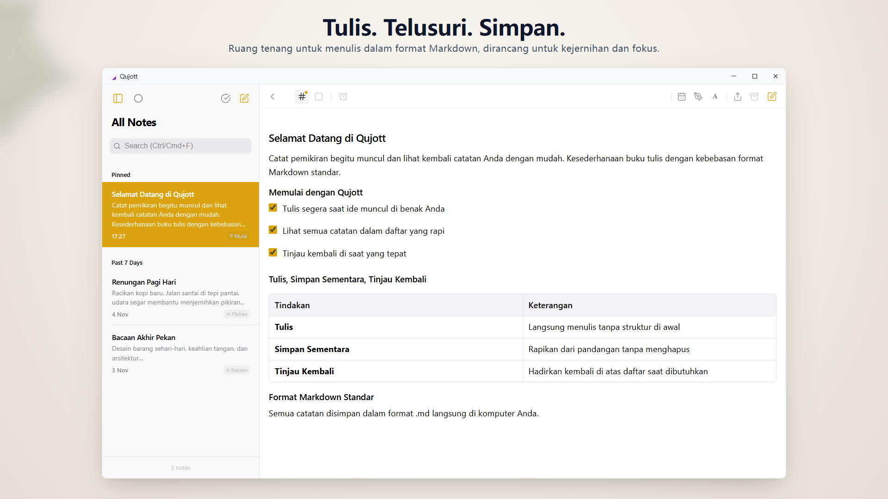
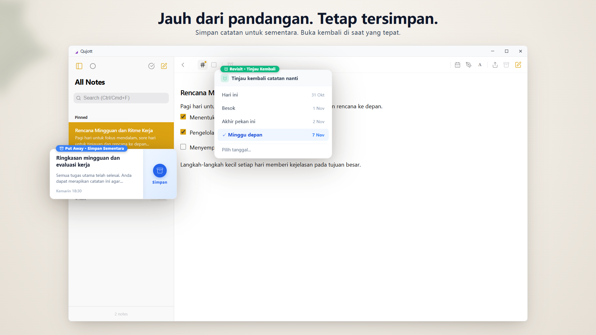
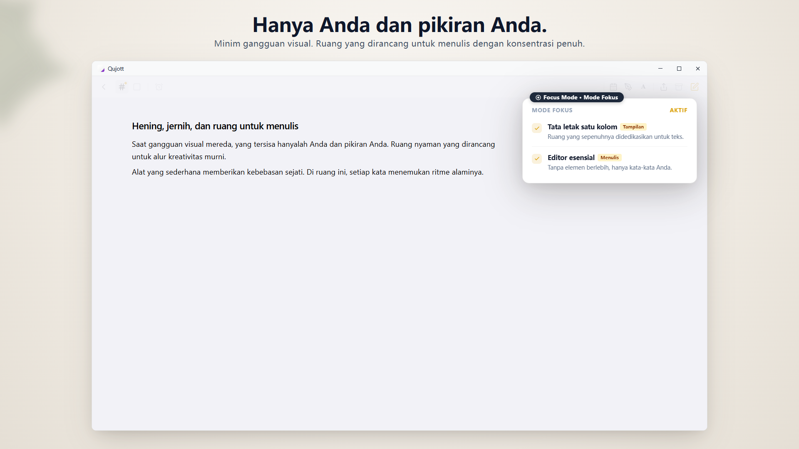
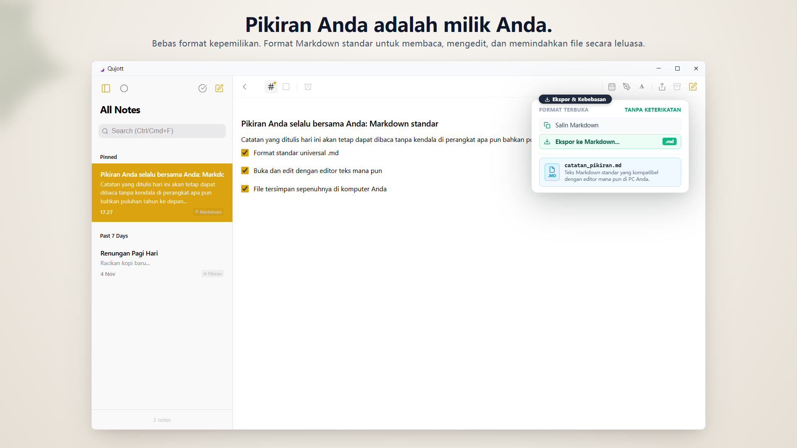
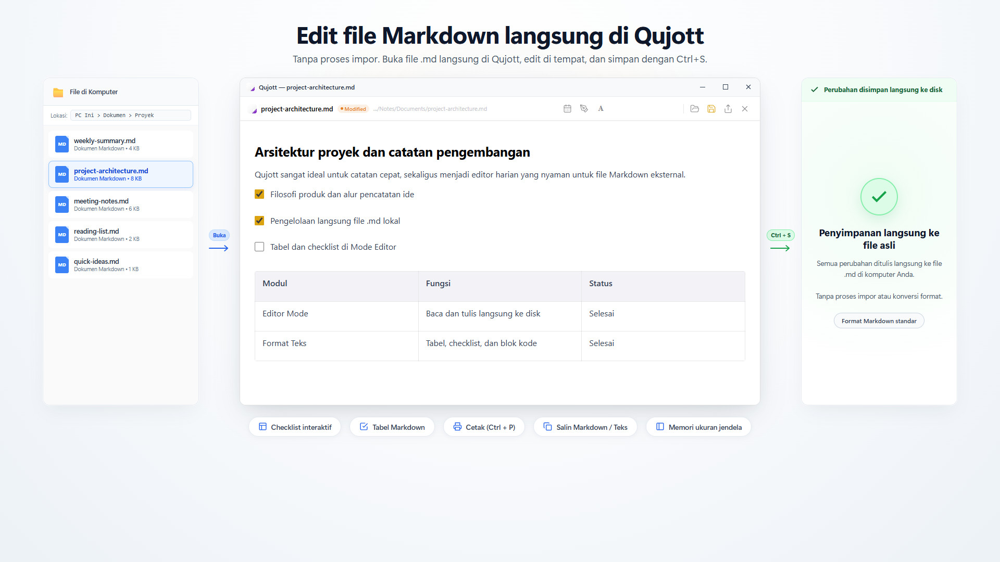
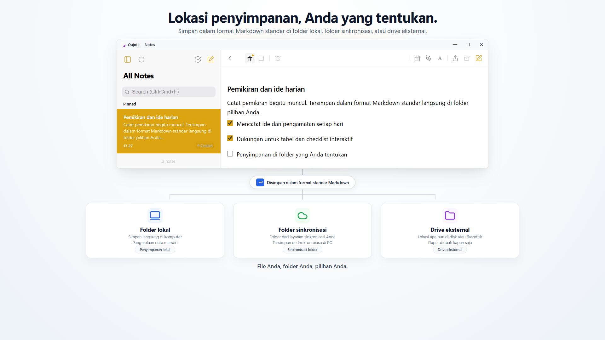
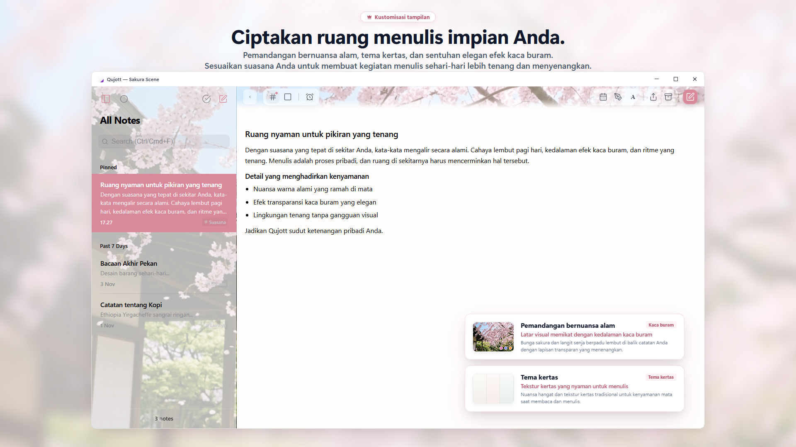

Qujott
Catat pemikiran dengan mudah,
dan lihat kembali kapan saja Anda mau.
Qujott memadukan kesederhanaan buku catatan kertas dengan keleluasaan editor teks dalam bentuk digital yang ringan.
Rapi-rapi nanti saja. Jaga catatan Anda tetap mudah dijangkau.
Mendukung format Markdown standar. Simpan dan edit catatan sebagai file teks biasa di folder pilihan Anda.

Ruang dua kolom yang tenang dan rapi, membuat pemikiran dan daftar catatan selalu tampak nyaman di depan Anda
Seperti buku catatan kertas di samping meja kerja Anda.
Qujott tidak dirancang untuk manajemen tugas yang rumit atau membangun basis data pengetahuan yang besar.
Sama seperti buku catatan kertas di sebelah keyboard Anda, aplikasi ini dirancang hanya untuk satu hal: mulai menulis tepat pada saat ide terlintas di benak Anda.
Anda tidak perlu memikirkan folder terlebih dahulu atau dipaksa memasukkan tag.
Cukup tuliskan kata-kata yang muncul dan letakkan di dekat Anda. Anda bisa menatanya nanti sambil membacanya kembali dengan santai.
Simpan sementara catatan dan temukan kembali pada waktu yang tepat.
Setelah selesai menulis catatan, Anda tidak perlu menghapusnya—cukup sembunyikan dengan fitur «Simpan Sementara» (Put Away) agar ruang kerja tetap rapi.
Dengan fitur «Lihat Nanti» (Revisit), catatan akan muncul kembali dengan tenang di bagian atas daftar hari ini, besok, atau minggu depan. Tanpa alarm bising atau notifikasi yang mengganggu.

Jaga ruang kerja tetap bersih dan rapi tanpa menghapus catatan penting. Catatan akan muncul kembali secara lembut di bagian atas daftar hari ini, besok, atau minggu depan.
Hanyut dalam tulisan tanpa gangguan visual.
Sembunyikan bilah samping dan beralihlah ke tata letak satu kolom yang minimalis melalui «Mode Fokus» (Focus Mode).
Antarmuka menyederhanakan elemen yang tidak perlu, memberi Anda ruang hening untuk menata pikiran dan menulis secara mendalam.

Tata letak satu kolom yang minimalis meredakan kekacauan visual, membantu Anda lebih fokus untuk menulis dan berpikir secara mendalam.
Catatan Anda tetap berada di bawah kendali Anda.
Semua catatan disimpan dalam format Markdown (.md) terbuka yang terstandarisasi.
Tidak ada keterikatan format eksklusif (No lock-in). Anda dapat membuka, mengedit, mengekspor, atau memindahkannya kapan saja melalui Windows File Explorer atau editor teks yang kompatibel.

Semua catatan disimpan dalam format terbuka Markdown (.md). Anda dapat membuka, mengedit, mengekspor, atau memindahkannya kapan saja dengan aplikasi lain yang kompatibel.
Buka dan edit file Markdown di komputer secara langsung.
Buka file Markdown yang ada di komputer Anda langsung di Qujott, lakukan perubahan, dan simpan kembali ke file asli dengan menekan Ctrl+S.
Tanpa proses impor atau konversi format. Editor yang ringan dan nyaman untuk kebutuhan tulis-menulis harian Anda.

Buka dan edit file Markdown langsung di Qujott, menyimpan perubahan ke file asli di komputer Anda dengan Ctrl+S. Tanpa impor dan tanpa konversi format.
Tentukan lokasi penyimpanan catatan Anda.
Anda dapat menetapkan folder di komputer sebagai lokasi penyimpanan Qujott: folder lokal PC, folder sinkronisasi cloud yang ada, atau drive eksternal.
Tanpa perlu registrasi atau membuat akun—catatan tetap tersimpan di folder pilihan Anda.

Pilih lokasi penyimpanan file Anda: folder lokal PC, folder sinkronisasi yang ada, atau drive eksternal. Catatan tetap berada di folder yang Anda pilih, tanpa perlu membuat akun.
Ubah ruang menulis menjadi tempat yang menyenangkan.
Suasana alami «Atmosphere Scenes» (seperti bunga sakura Sakura), efek kaca buram (frosted glass), dan tekstur kertas menghadirkan nuansa damai dalam rutinitas menulis sehari-hari (add-on Qujott Pro).
Mendukung pula penyesuaian skala antarmuka UI (80% hingga 160%), membantu Anda menyesuaikan ukuran tampilan agar nyaman dibaca di berbagai resolusi layar.

Add-on Qujott Pro memungkinkan Anda mempersonalisasi ruang menulis: pemandangan atmosfer (seperti Sakura), tema bertekstur kertas, dan efek kaca buram menghadirkan suasana tenang untuk rutinitas menulis sehari-hari.